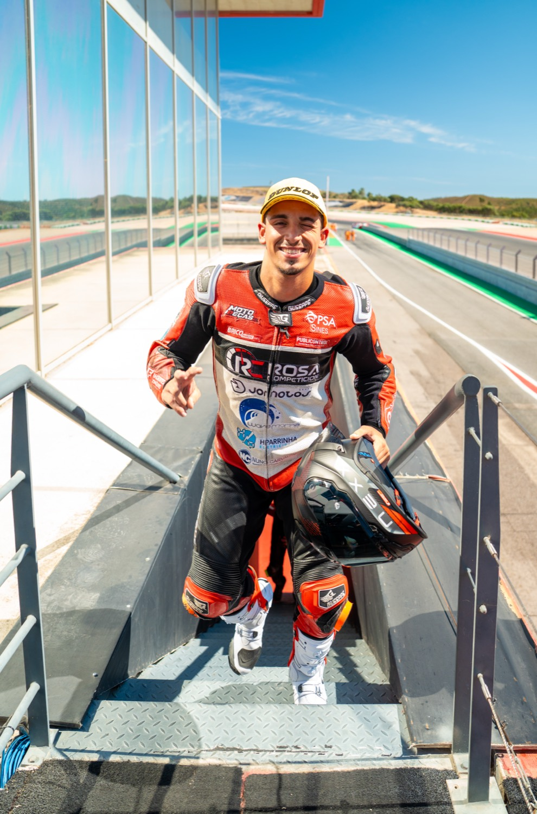

Dos 90cc ao mundial
Começou aos 9 anos, numa 90cc, na escola RL 58 Performance, em Santo André. Nove anos depois é bicampeão nacional, corre em Espanha e já se estreou no mundial.
2017–18Mini Velocidade
Ganhou a corrida de estreia e partiu os dois braços no mesmo ano. Voltou em 2018 e foi vice-campeão, com 3 pódios.
2019–20Moto5
5.º em 2019 e 8.º em 2020, numa MIR 250.
2021–24Supersport 300
Kawasaki Ninja 400. Vice-campeão nacional em 2023 e 2024. Perdeu 2024 por 0,72 s, com 3 vitórias e 10 pódios.
2025Stock 600
Campeão nacional na estreia, na Honda. Partiu a clavícula no Estoril e, um mês depois, ganhou em Portimão.
2026Supersport 600
Bicampeão com uma ronda de avanço: 5 vitórias e 9 pódios. Wildcard no WorldSSP em Portimão.
2027 →Nacional + Espanha
Defender o título e correr mais em Espanha (ESBK). O sonho: «chegar a um dos mundiais.»